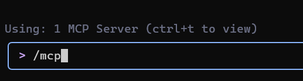

Gemini CLI — is a tool that works directly in your terminal, understands your codebase, and helps fix bugs using natural language queries. It is Google's answer to Anthropic's Claude Code. You can use Gemini 2.5 Pro (the tool will switch to Gemini 2.5 Flash if the limit is reached) and its 1 million token context window to perform up to 60 requests per minute and 1000 requests per day, all for free.
pytest.git, npm, pip, and others, allowing you to manage projects without leaving the CLI.To get started, install Node.js (version 18 or higher). You can download the installer of your choice or run the following bash commands in your terminal:
# Download and install nvm (Node Version Manager):
curl -o- https://raw.githubusercontent.com/nvm-sh/nvm/v0.40.3/install.sh | bash
# Initialize nvm in the current terminal session
. "$HOME/.nvm/nvm.sh"
# Download and install Node.js (e.g., version 22):
nvm install 22
# Check Node.js version:
node -v # Should output "v22.17.0" or similar
# Check npm version:
npm -v # Should output "10.9.2" or similar
⚠️ Important for Windows users: The
nvmcommand above is for Linux/macOS and will not work in PowerShell or cmd.exe. For Windows, use nvm-windows by downloadingnvm-setup.exefrom the Releases section. Alternatively, you can install WSL (Windows Subsystem for Linux) and run the commands in Ubuntu or another Linux distribution.
Once Node.js and npm are installed and verified, install Gemini CLI by running the following command in your terminal:
npx https://github.com/google-gemini/gemini-cli
Or use npm for global installation:
npm install -g @google/gemini-cli
gemini
After installation, type gemini in the terminal to access the tool.
You can use your personal Google account for authentication. This will provide you with up to 60 requests per minute and 1000 requests per day when using Gemini.
In this guide, I used Sign in with Google, but you can also use an API Key (set as an environment variable or in a .env file) or Vertex AI authentication.
To generate a new API key, sign in to AI Studio with your Google account and click "Create API Key".
# Set the key as an environment variable
export GEMINI_API_KEY="Your_API_Key"
# Or create a .env file
GEMINI_API_KEY="Your_API_Key"
You can use the /auth command in the text field to switch authentication methods as needed.

Once the CLI is running, we can start interacting with Gemini from the terminal. There are two ways to work with a project.
To start a project from scratch, run the following commands:
cd new-project/
gemini
Inside the CLI, use a prompt to solve the problem you are interested in, for example:
Write a transformer encoder code from scratch.

Grant permission to write files:

If you already have a codebase, you can work with it by running the following commands:
git clone https://github.com/AashiDutt/Google-Agent-Development-Kit-Demo
cd Google-Agent-Development-Kit-Demo
gemini
Inside the CLI, use a prompt, for example:
Provide me with a summary of all changes made to the codebase in the last month.
As an example, I will use the ADK-powered üåçüõ´ Travel Planner project. With Gemini CLI, I will show how to:
Let's start by asking Gemini to explore and explain the codebase.
Prompt: Explore the current directory and describe the project architecture.
Gemini CLI will return a structured summary explaining the architecture:
travel_ui.py) provides an interface for interaction.host_agent acts as the central coordinator.flight_agent, stay_agent, activities_agent for searching flights, hotels, and activities.shared/schemas.py defines common data structures.This helps to get oriented without manually reading every file.
Let's investigate some open issues from the GitHub repository.
Prompt: Here's a GitHub issue: [@search https://github.com/AashiDutt/Google-Agent-Development-Kit-Demo/issues/1]. Analyze the codebase and propose a 3-step fix plan. Which files/functions should be changed?
Gemini CLI investigated the issue:
@search function, it retrieved data from GitHub.create_session() was not called with await).Next, the CLI waits for user input to evaluate the changes. If the user agrees, it will apply the proposed changes.
Now, let's implement and test the fixes proposed by Gemini.
Prompt: Write a unit test for this change in pytest in the test_shared.py file.
Gemini CLI:
json.dumps() before sending the task payload.test_agents.py to add unit tests.Now that the fixes are in place, let's summarize the changes and record them in Markdown in a .txt file.
Prompt: Write a markdown summary of the bug, fix, and test coverage. Format it as a changelog entry under version "v0.2.0".
Then, to save the summary to a document, I used the following prompt:
Prompt: Save this summary to a .txt file and name it summary.txt
Gemini CLI uses the WriteFile tool to save the summary.txt file in the project directory.
This section extends previous experiments where I explore how Gemini CLI uses the Model Context Protocol (MCP) to maintain file-level summaries and task history between prompts. This gives Gemini "working memory" within a session.
Prompt: Generate a flowchart that shows how agents communicate via A2A (agent-to-agent) and how main.py manages the system. Highlight where the issue occurred and how it was fixed.
This visualization was made possible by Gemini's persistent memory, which retained the full context of our previous bug fix and agent structure without needing to reload files.
Calling the /tools command in Gemini CLI will show a list of available tools that can be used to perform various tasks, such as editing code, generating tests, creating documentation, and more.

ReadFolder (ls)
Lists files and folders in a directory — analogous to the ls command in the command line.
ReadFile (read-file) Reads the full content of a single file, useful for creating summaries or analysis.
ReadManyFiles (read-many-files)
Reads multiple files simultaneously, usually by pattern (e.g., all .js files).
FindFiles (glob)
Searches for files by pattern (e.g., find all config.json files in your project).
SearchText (grep)
Searches for text within files, for example, to find all TODO comments.
Edit (edit)
Applies code changes using diff. Gemini shows a preview of the edits and asks for confirmation before applying them.
WriteFile (write-file)
Creates new files (e.g., README.md) with content provided by the user.
Shell (shell)
Executes commands directly in the terminal if you prefix them with ! (например, !npm test).
WebFetch (web-fetch) Downloads content from the web (HTML or JSON), allowing Gemini to analyze external data.
GoogleSearch (web-search) Performs a Google search to base answers on real-world information (e.g., to find an explanation for an error).
Save Memory (memoryTool) Saves facts or preferences during a session (e.g., "I prefer async/await") to improve consistency and coherence of responses.
You can add special instructions for the AI for a specific project by creating a GEMINI.md file in the root directory of your project.
Inside this file, you can define project rules, code styles, and tools that the agent should use. This ensures that the generated code adheres to your project's standards.
For most everyday tasks, the built-in tools will suffice. But what if you want to Gemini CLI to do something highly specialized, like interact with specific APIs or use a specialized model (say, an image generator or a security analysis tool)? This is where MCP (Model Context Protocol) comes in.
Essentially, MCP is an open standard that allows developers to add new tools and capabilities to AI by running a server that the CLI can interact with. In Gemini CLI, you can configure "MCP servers" in a JSON settings file, and the CLI will treat them as additional tools it can use.
As an example, I will show you how to set up an MCP server for GitHub in Gemini CLI.
Inside your project folder, create a folder using the command:
mkdir -p .gemini && touch .gemini/settings.json
Fill the file with this code:
{
"mcpServers": {
"github": {
"command": "npx",
"args": ["-y", "@modelcontextprotocol/server-github"],
"env": { "GITHUB_PERSONAL_ACCESS_TOKEN": "[YOUR-TOKEN]" }
}
}
}
Instructions on how to get a token
After that, type /quit in Gemini CLI to exit, and then open it again.
You will see that the GitHub MCP server is running and ready to use.

Enter the /mcp command, and you will see a list of GitHub tools.